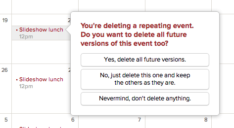

Basecamp makes it easy to add events that happen more than once, like meetings, classes, appointments, or birthdays. Here's how it works.
Adding a recurring event
Click any day in the Calendar to add a new event. A balloon will pop up where you can enter your event's details. Click the link in the middle that says "Lasts multiple days or repeats..."
Click the Repeats menu to select how often you'd like the event to repeat. You can set it to repeat every day, every week, every month, or every year.
You can also choose when the event stops repeating. By default, it will repeat forever, but you can stop it after a number of occurrences or on a specific date.
Save your event, and you'll see it on the calendar.
You'll see it on the project or calendar Agenda list too.
Changing a recurring event
If you need to change any details about a recurring event – like its title, time, or start date – you can apply those changes to just one instance, or all future instances too.
If you want to change all instances of a recurring event, change the first instance and choose Yes, change all future versions.
Deleting a recurring event
To delete a recurring event, click the event, then click the trash can icon.
You can delete all future events, or just that single event.

If you want to delete all instances of a recurring event, delete the first instance and choose Yes, delete all future versions.